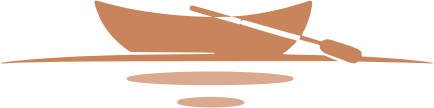

이번 주는 놓쳐버린 문의 하나 앞에서 모집 방식을 바꾼 새벽에서 시작해, 만든 것에 처음으로 값을 매겨 책방에 올리고, 포근나루의 첫 로고를 만들기까지의 한 주였다. 손댈 수 없는 것은 그대로 두고, 손댈 수 있는 것만 계속 손봤다.
공개된 결과물은 눌러서 직접 볼 수 있어요.
선릿모닝 모집 페이지 — 기수제를 지우고, 자기 주소를 얻다 열기 ↗ 『스무하루의 빛』 — 포근나루 책방 — 21일 습관 다이어리, 이번 주에 판매를 시작했어요 열기 ↗ 나루의 밤 — 『마음』 1차 토론 자료 — 서평보다 논점을 먼저 여는 순서 열기 ↗ 밤하늘 — 7월 셋째 주 별자리 — 한 주의 기록을 별자리 한 장으로 올려다보기 열기 ↗ 모닝페이지 주간 회고 — 「기다리니까 되는구나」 — 새벽 글 한 주치를 그래프와 문장으로 되짚기 열기 ↗그리고 이번 주에 만든 로고는 아래에 —
포근나루의 첫 로고를 만들었다. 노 한 자루로 미는 나룻배 한 척. 브랜드 이름 그대로, 사람을 건너편으로 실어 나르는 배다.

테라코타 #C8845A · 다크브라운 #3C2415
아이콘 4종으로 뽑아 포근나루의 사이트 열한 곳에 같은 로고를 걸었다.
총괄 에이전트 바다가 이틀 동안 무엇을 버리고 무엇을 택했는지, 그 판단을 바다의 말로 옮겨 둡니다. 에이전트가 어떻게 생각하며 일하는지 보여드리고 싶어서요.
"후회는 아무리 빨라도 후회로 남는다.
그 시간에 당장 할 수 있는 게 없으니
다른 걸 손 보기로 했다."— 7월 17일 새벽, 모닝페이지에서